Manual
Every ImberGym feature explained step by step. Features marked PREMIUM are part of ImberGym Premium; everything else is free. During the beta everything is unlocked.
01Getting started
When you first open ImberGym, a few short questions set things up. You can change everything later in your profile.
- Language – English or German (preselected from your phone).
- Units – metric (kg, km) or imperial (lb, mi). The app always stores exact values; the unit only affects display.
- About you – name, gender (including “prefer not to say”), age, optionally weight and height. Weight and height are used for bodyweight exercises and your calorie goal.
- Goal and training – goal (e.g. build muscle, lose weight), activity level, where you train (gym, home with dumbbells, no equipment) and optional training days. Training days are only a plan – nothing is ever marked as “missed”.
- Rest timer – whether a countdown runs after each set.
- Count calories? – without nutrition the “Nutrition” tab disappears and ImberGym is a pure workout log.
- Starter plan and calendar – the app can create a matching beginner plan and save workouts to your calendar (see Calendar).
New phone? Tap “Restore backup” on the first page and pick the ZIP file of your backup (see Backup).
02How the app is organised
- Overview – your day: week, recommendation, plans, start a workout.
- Plans – your plans, templates and the exercise library.
- History – stats, all workouts and records.
- Nutrition – calories, macros, foods and recipes (can be turned off).
- Profile – settings, body stats, supplements, gyms, backup and more.
Messages at the bottom disappear after a few seconds or when tapped – including those with “Undo”.
03Overview
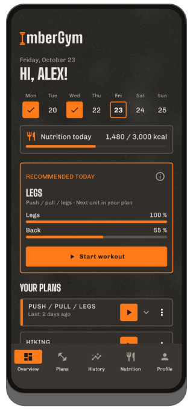
Week
The Mon–Sun bar shows completed workouts in orange with a tick, upcoming planned days dashed and today with a frame.
Today’s pick
If your most recently used plan has several units, the card suggests the right one – based on the plan order and how recovered your muscles are (see Recommendation). “Start workout” gets you going immediately.
Your plans
- All plans are collapsed, the most recently trained first. Tap to expand and see every unit with its last session (duration, sets, volume or distance).
- ▶ starts the next unit. If a plan has several units, the app asks which one – the next one due is at the top.
- Tapping a card opens the last workout of that unit with all sets.
- Via the ⋮ menu you can “Remove from overview” (with undo). The plan stays in the Plans tab and comes back when you train it again.
- Free workouts from the last four weeks appear here as well (named after their exercises, e.g. “Hiking”) and can be repeated with ▶.
Quick start
- Other unit – start any unit of a plan.
- Free workout – no plan, add exercises as you go.
- Interval – Tabata and more. PREMIUM
- Outdoor with GPS – record runs, rides and hikes. PREMIUM
Depending on your settings the overview also shows “Nutrition today”, “Supplements today”, an open GPS recording (“resume”) and a card icon at the top right for your membership cards.
04Plans & templates
Templates
The Plans tab contains ready-made plans: beginner (gym, home with and without dumbbells), full body A/B, upper/lower, push/pull/legs, muscle-group splits, abs-legs-glutes, calisthenics, kettlebell, bands, yoga and more. Start a template directly or copy it as your own plan. When copying, the app asks whether the rest timer should run.
Create and edit a plan
- Plans tab → create a new plan and name it.
- Add units (e.g. Push, Pull, Legs). Units are an order, not fixed weekdays.
- Add exercises to each unit and set sets, reps (also a range like 8–12), rest between sets and rest before the next exercise. “Per side” marks unilateral exercises.
- Superset: link two consecutive exercises – during the workout they alternate, rest comes after the round.
- Add an interval block (Tabata etc.) below the list – see Interval training.
Every change is saved immediately. A time estimate at the top shows roughly how long the unit takes. The editor also switches the rest timer for this plan and its display on the overview on or off.
Share a plan as a QR code
In the plan editor tap the QR icon: the whole plan is inside the code – no server involved. “Share as image” sends it e.g. via a messenger. Sharing is free.
Scan a plan PREMIUM: Plans tab → “Scan plan”, capture the code with the camera or load it from an image, check the preview, “Import”.
Free: up to 5 own plans (copied templates count); unlimited with Premium.
05Exercises
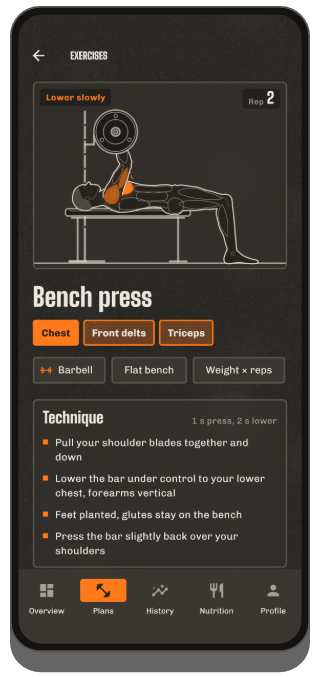
Exercise library
More than 250 exercises from machines to yoga. Search by name or muscle, filter by muscle and equipment.
Exercise detail
- Animation of the movement with the muscles involved in orange (primary strong, secondary lighter), the phase (“Press”, “Lower slowly”) and a rep counter.
- Muscles and equipment, “How to” with tempo and technique tips.
- Your progress – a chart of your values across workouts.
- For calisthenics, the progression levels (easier/harder).
The figure comes in a male and a female version – set it in your profile under “Figure”.
Create your own exercise
- Library → create your own exercise.
- Choose name, equipment and tracking: weight × reps, bodyweight × reps, reps with band strength, time, cardio or GPS recording (for your own outdoor sports; then also “Show pace” and “Auto pause”).
- Tap muscles on the body map: 1× = primary, 2× = secondary, 3× = off.
Own exercises with history are archived when deleted – your history stays. Free up to 5 own exercises, unlimited with Premium.
06Workout
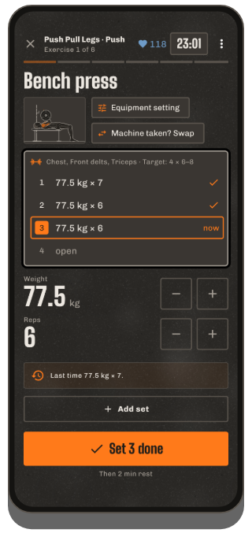
Starting
From the overview (▶, “Today’s pick”, “Other unit”, “Free workout”) or the Plans tab. A running workout even survives a phone restart – opening the app takes you straight back.
The workout screen
- One exercise per page – swipe to change exercise, the last page is the summary. At the top: exercise x of y, workout duration and (with a chest strap) your heart rate.
- Set list: done, “now” (orange) and open. Tap a set to select it.
- Values: change weight and reps with −/+ or tap the big number to type it (comma and dot both work). Last time’s values are prefilled.
- “Set n done” ticks the set, starts the rest and moves on to the next exercise automatically (in a superset to the partner exercise).
- Add set for an extra set. Sets you didn’t do stay empty and are dropped when you finish.
Helpers on the set card
- Tap the exercise thumbnail: animation and how-to without leaving the workout.
- Machine setting (machines, cables, barbell): remember e.g. the seat height – it’s there next time.
- Weight step (e.g. dumbbells): step size of −/+ per piece of equipment (default 2.5 kg / 5 lb).
- Machine taken? Swap or Swap exercise: pick a suitable alternative (only before a set of the exercise is done).
- Progression tip: if you hit all reps, the app suggests more weight (or less assistance, a stronger band, the next level). Only “Apply” enters it.
- New record! appears right after ticking a set when you beat a previous best.
Menu ⋮
Add exercise, choose gym PREMIUM, show card PREMIUM, rest timer on/off, remove exercise, discard workout.
Cardio and holds
Cardio exercises have no sets: time and distance (floors on a stair climber), level on machines, then “Done”. Holds (e.g. plank) record seconds.
Bodyweight and assistance
For bodyweight exercises you enter added weight, for assisted exercises (e.g. assisted pull-up) the assistance – the app calculates with your bodyweight from the profile. If it’s missing, it asks once on the first set.
Finishing
“Finish workout” on the summary page, or ✕ / the back button: the app asks “Finish / Discard / Keep training”. Without a completed set nothing is saved.
07Rest & lock screen
- After each set the rest countdown runs at the bottom with “Up next”, −15 s, +15 s and “Skip”. Its length comes from the plan (set rest or rest before the next exercise).
- The timer keeps running when you lock the phone or switch apps; a notification shows the countdown, and the rest signal plays at the end.
- Choose the rest signal in your profile: beeps, gong, bell, whistle, boxing bell, soft, system sound or none – with preview. Vibration is a separate switch.
- Turn the timer off: per plan in the editor, for free workouts in the profile, during a workout via ⋮.
- Heart-rate based rest: with a chest strap the rest ends as soon as your heart rate drops to your threshold (after 30 s at the earliest, with the timer at the latest).
Lock screen
During a workout ImberGym appears above the lock screen: logo and a large clock (rest or workout time). After 2 minutes it dims, a tap brightens it; “Tap to unlock” takes you back to the workout. The display stays on during the workout.
08Interval training PREMIUM
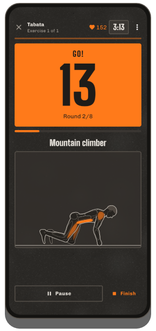
Quick start
- Overview → “Interval” tile.
- Pick a template: Tabata 20/10 × 8, HIIT 40/20 × 8, 30/30 × 10 or EMOM 60 s × 10 – everything adjustable: work, rest, rounds, sets and rest between sets.
- Add exercises – they alternate each round.
- “Start intervals”.
How it runs
After 10 s of get-ready a big countdown shows work (orange) and rest (grey, with “Up next” and the figure). Before work a voice counts “One, two, three – go!”, before its end “Three, two, one – stop!” (can be switched off under rest signal in the profile; then beeps). It works with a locked phone too. Pause and finish any time; completed intervals are saved. At the end you can enter your reps per round.
In a plan
Add an “Interval block (Tabata etc.)” in the plan editor – the block becomes its own page in the workout.
Count with camera EXPERIMENTAL
For exercises without equipment (squat, jump squat, split squat, reverse lunge, burpee, push-up variations) and the ab exercises crunch, sit-up, reverse crunch, V-up and leg raise, the camera can count your reps. For high plank, plank and side plank it measures how long you hold the position cleanly: the interval clock keeps running, the held time only while shoulders, hips and ankles form a line – otherwise you see “Hips up!” or “Hips down!”.
- On the block page tap “Count with camera (experimental)” and allow the camera.
- Place the phone sideways 2–3 m away, e.g. leaning against a wall or bottle. Push-ups, abs, or standing and floor mixed: stand the phone upright on the floor.
- “Start when I'm ready” – then get into position. Once you stand still in the picture for 2 seconds, the block starts by itself (after 20 seconds at the latest).
During work, seconds and reps are shown side by side, below them “perfect” (full range) and “regular” (not quite full). Reps that are too shallow don't count. At the end the summary shows reps per exercise and round, your technique share and a tip; the numbers are pre-filled and can be changed.
The camera image is only analysed on your phone and never stored. Detection stays with you even if someone trains behind you at the gym. The feature is still being tested – check the numbers at the end.
Challenge
Overview → “Challenge” tile (free): “How many push-ups can I do?” – the camera counts. Three types: Max reps (ends by itself when no rep comes for 6 seconds), Against the clock (as many as possible in 30 s to 2 min) and Hold (plank etc., ends when your position is off for 2 seconds). Pick an exercise, set up as above, and after “3 – 2 – 1 – Go!” it starts. At the end you see your result with “perfect”, your previous best and possibly “New record!”. The challenge is saved automatically (it appears in your history and counts towards your records; delete it there if you like). Share sends your result as a card with exercise, score and, if earned, “New record!”.
09Today’s pick & plateau coach
Today’s pick
For plans with several units: if the next unit in the plan is well recovered (at least 85 %), it’s recommended; otherwise the best-recovered one. The card shows recovery of the main muscle groups and a hint like “Legs only 27 % recovered”. ⓘ explains the rule. Can be turned off in the profile.
Plateau coach PREMIUM
If an exercise hasn’t improved for 4 workouts (or 3 workouts over 3 weeks), a yellow hint appears before the first set with a suggestion, e.g. “go lighter today (70 kg × 8) and push again afterwards”.
- Apply enters the lighter weight (−10 %) in the open sets.
- More shows the trend and options: deload, a different rep range, a variation, longer rest.
- Hide for 2 weeks if you deliberately want to continue.
Cardio and holds never get a plateau hint. Can be turned off in the profile.
10Watch (Wear OS) PREMIUM
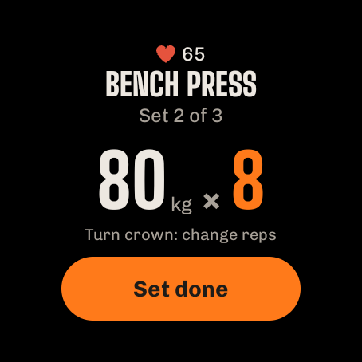
With a Wear OS watch (e.g. Samsung Galaxy Watch 4 and newer, Google Pixel Watch, OnePlus Watch, TicWatch) you control your workout from your wrist – your phone can stay in your pocket. All data stays on the phone; the watch only displays it and sends your input.
Install
- ImberGym must be installed on your phone.
- Open the Play Store on the watch and install ImberGym – or, on your phone, choose “Install on more devices” on the ImberGym page in the Play Store.
- When you open it on the watch for the first time, allow notifications and heart rate.
Start a workout
The watch lists all plans with their units, the next one in orange. Tap to start the workout on phone and watch. If a workout is already running, the watch shows the current set right away.
Set
- Exercise, “Set 2 of 3” and your values from last time.
- Tap a value → change it with −/+ (weight in your weight step). Tap the number → type any value, e.g. 82.5.
- With a crown or rotating bezel, turning changes the reps directly.
- “Set done” ticks off the set – on your phone too.
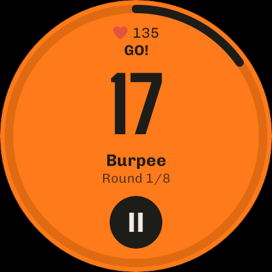
Rest
Countdown with a ring; +15 adds time, ▶ skips. The watch counts on its own and vibrates when the rest is over – even when the app isn’t open or the screen is off. Meanwhile an ImberGym icon with the remaining time shows on the watch face.
Interval training
On an interval block’s page the watch shows type, timing and exercises with “Start intervals”. Then: work in orange, rest dark with “Up next”; a vibration at every change. ⏸ pauses, then ▶ resumes or ✕ stops. You enter the reps per round on your phone afterwards.
Heart rate
During the workout the watch measures your heart rate and sends it to your phone – just like a chest strap (❤ display, heart rate zones, workout details). If a chest strap is connected, it takes priority.
Tile
Add the “ImberGym” tile to your watch’s tiles: it shows the next unit with “Start”, or the current exercise during a workout.
Older watches: Tizen watches (e.g. Gear S3) are not supported. Garmin, Amazfit and others can often broadcast heart rate like a chest strap (see Heart rate).
11Outdoor & Trackshow PREMIUM
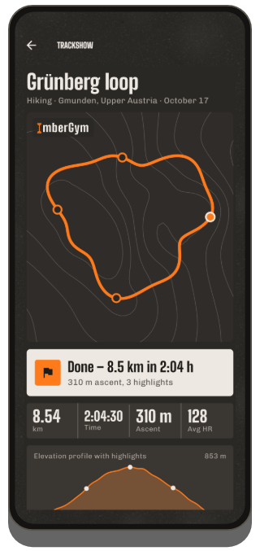
Recording
- Overview → “Outdoor with GPS” → choose the activity (running, cycling, hiking …).
- Allow location “while using the app”. Start recording – the display may be off; a notification shows “ImberGym is recording”.
- Pause and resume any time. When running and cycling the app pauses automatically after 10 s standing still and resumes with your first step (not when hiking – the break is part of the tour). After a manual pause it also resumes by itself once you move on.
- “Finish” saves the tour as a workout with distance, time, speed or pace and elevation (from the barometer).
Trackshow
After finishing, the Trackshow plays your route on contour lines – with camera flight and highlights (steepest section, highest point, fastest kilometre, record), result card and elevation profile. “Play again” restarts it; tap the place name to change it.
Share as a story image (9:16) or as a video with camera flight. The workout details also offer a GPX export for other apps.
12History & stats
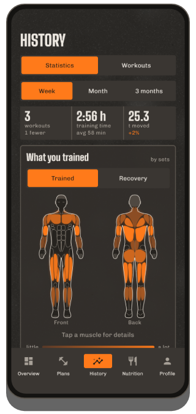
Stats
- Period week / month / 3 months (rolling up to today) compared with the period before: workouts, training time, volume.
- What you trained PREMIUM: body map front/back, the more sets the stronger the colour; tap for the number. Toggle Recovery: how recovered each muscle is (estimate).
- Distribution across muscle groups as a ring.
- Records – the latest ones; “See all” opens the list. Tap a record for the exercise’s progress.
- Show weight & body fat and the weekly and yearly review as a shareable card.
Workouts
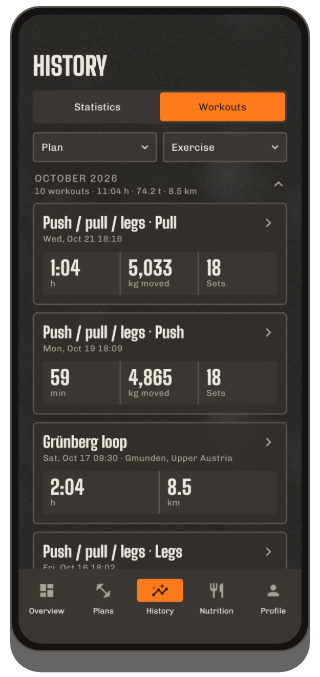
All workouts by year and month with totals. Filter by plan (including “Free workouts”) and exercise, combinable.
Workout details
- All exercises and sets, trophies for records, gym or place.
- Edit: tap a set to change it, add or delete sets, adjust date, start time and duration, delete the workout.
- Heart rate (average, maximum, curve) – from the chest strap or via “Load heart rate from watch”.
- Share workout as a card with muscles, exercises and new records; for GPS tours the Trackshow and GPX.
Records
Per exercise: max weight, estimated 1RM, volume, most reps, longest hold; for cardio longest distance, fastest pace or speed, longest duration. A record only counts if it beats a previous best.
13Nutrition
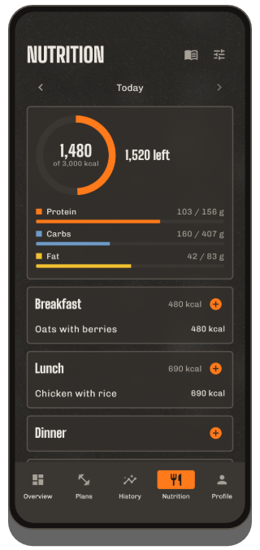
The day
Use ‹ › to move between days. The ring shows eaten versus goal and “left”, below it protein, carbs and fat. Four meals: breakfast, lunch, dinner, snacks.
Logging food
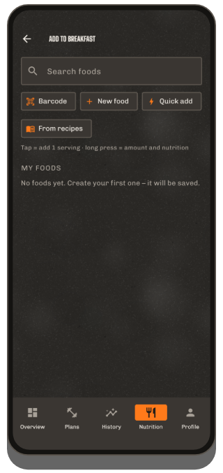
- + on a meal opens the tiles: first what you often eat at this meal, otherwise typical suggestions.
- Tap logs one portion immediately (the amount is shown under the name), with “Undo”. The small − on the tile removes a portion again.
- Long press opens the amount in grams, millilitres or portions (also ½) with a nutrition table.
- Search: more than 1,200 foods and everyday dishes, offline.
- Barcode: scan a product – it’s looked up locally first, otherwise at Open Food Facts. Check the values, save – next time it’s there instantly.
- Create your own food (values per 100 g or 100 ml, “Liquid” switch) or use Quick add (calories only).
- From recipes – a recipe straight into this meal.
- Tap an entry to change the amount or remove it.
Goals
“Adjust goals” (or tap the ring): choose your goal, automatic calorie goal (from height, weight, age, activity) or your own, individual macros, a separate rest day goal. Dynamic calorie goal PREMIUM: adds a share of your measured activity from Health Connect (slider 0–100 %).
Not interested in calories? Profile → turn nutrition off; the tab disappears.
14Recipes
Nutrition → “Discover recipes” or the library: 40 original recipes with filters (meal, high protein, vegetarian). A recipe shows calories and macros per serving, ingredients with a serving calculator (−/+, ½, ¼, ¾), steps and a tip. “1 serving to diary” logs it. 6 basic recipes are free; all others and your own recipes (ingredients from the food search, own photo) are Premium PREMIUM.
15Weight, body fat & progress photos
Weight & body fat
- Profile → “Weight & body fat” → add an entry. Body fat as a value or estimated from measurements (neck, waist, hips if needed – requires height in the profile).
- The “Current” card shows the 7-day average and the change. Charts PREMIUM with 1 month, 3 months, 1 year, all.
- Entries are grouped by month; tap to edit or delete.
- Import from Health Connect (e.g. a Withings scale): turn on the switch and allow – new measurements arrive by themselves; pull down to refresh immediately.
- Your profile weight always follows the newest entry.
Progress photos PREMIUM
Profile → “Progress photos”: choose the view (front, side, back); “Camera” shows your last photo semi-transparent as an overlay (same pose and distance), with self-timer. Compare before/after with a slider or crossfade. Photos stay in the app, not in the gallery and not in the Android backup; “Share / Save”, “Export all photos” and “Share comparison” hand them out deliberately.
16Heart rate & Health Connect
Heart rate from your watch
If your watch writes to Health Connect (e.g. Samsung, Google, Garmin via Health Connect): in the workout details tap “Load heart rate from watch” – allow it once, afterwards ImberGym fetches the heart rate of recent workouts automatically. Tip: start a workout on the watch as well, otherwise it only measures every few minutes.
Huawei watches: Huawei Health does not write to Health Connect. The app “Health Sync” transfers heart rate – then it works as above.
Chest strap & heart-rate zones
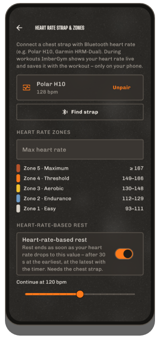
- Profile → “Chest strap & zones” → put the strap on, “Search”, pair (allow “Nearby devices”).
- During a workout it connects by itself; your heart rate shows at the top in the colour of its zone.
- Set your max heart rate (otherwise 220 − age); five zones are derived from it.
- Optionally heart-rate based rest with your own threshold (see Rest).
Many watches can broadcast heart rate like a strap (e.g. Garmin “Broadcast heart rate”, newer Huawei watches “Share heart rate”, Polar, Coros, Suunto) – just pair them like a strap.
17Supplements
Profile → “Supplements”: add your own products (name, form, unit such as mg, IU, piece, drops …, usual amount, optionally active ingredient per unit). Tap “Taken” each day (long press = different amount, ↶ = undo, also for past days). Reminders come with a time and weekdays (daily, Mon–Fri or custom). The monthly calendar shows on which days you took everything. ImberGym deliberately suggests no products or doses.
18Gyms & membership cards PREMIUM
My gyms
Profile → “My gyms”: create a gym with a name and “Use current location”. When you start a workout there, the app recognises the gym (“Gym detected”); otherwise choose it during the workout via ⋮ → “Choose gym”. The place appears in the history, the details and the calendar entry.
Membership cards
Profile → “Membership cards”: scan the card’s barcode or QR code with the camera or enter number and format, pick a name and colour, link a gym. Tap to show the card full-screen at full brightness – for the scanner at the entrance. Quick access via the card icon on the overview and during a workout via ⋮ → “Show card”. Cards stay on your phone only (never in a backup). Transponder chips (RFID/NFC) unfortunately can’t be emulated by a phone.
19Calendar
Profile → “Save workouts to calendar”: grant permission, pick a calendar; previous workouts can be added too. Every finished workout becomes an event (title “ImberGym: plan name”, start and end, exercises and sets in the description, gym as location) and is updated after editing or removed when deleted. When you switch it off, the app asks whether to delete existing entries. No events are created in advance.
20Profile & settings
- Personal: name, gender, age, height, weight, goal, activity.
- Language and units – changes apply instantly.
- Figure: male or female figure in animations and body map.
- Rest signal: sound with preview, vibration, “Voice in interval training”.
- Rest timer default for free workouts and new plans.
- Today’s pick and plateau coach on/off.
- Nutrition on/off.
- Weight & body fat, progress photos, supplements, chest strap & zones, my gyms, membership cards, calendar, data & backup.
- ImberGym Premium, Rate ImberGym and About ImberGym (version, privacy, contact, sources, licences).
21Backup, import & export
Backup
Profile → “Data & backup” → create backup: a ZIP file with all data (progress photos only if you include them) – save it via the share menu, e.g. to Google Drive or Files. Keep it safe; ImberGym has no cloud.
Restore
“Choose backup file” → check date and number of workouts → “Replace”. The app restarts with the backed-up data. Also possible on the first page after installing.
Import from other apps
“Choose CSV file”: exports from Strong and Hevy are recognised (for Strong pick the weight unit). The preview shows workouts, sets and new own exercises; duplicate workouts are skipped.
Export
“Export workouts as CSV” – one row per set, opens e.g. in Excel.
23Help
- No rest signal? Allow notifications for ImberGym and check “Do not disturb”.
- Heart rate missing for short workouts? Without a workout on the watch it only measures every few minutes – train on the watch too or use a chest strap.
- Gym not detected? Allow location and save the gym’s location once on site.
Questions, wishes, bugs: chr.mathai@gmail.com